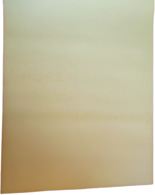

Fabrics 🧵
Inside Fabric
The inside fabric is a piece of one-color satin.


Outside Fabric
It is the most visible part of the cover : many patterns and colors are available.


Vegan Leather
This is an option to make the cover more rigid, by adding a layer of vegan leather on the front side of the cover.


Padding wadding
To make our cover really protective, we use a thick and soft special fabric - padded wadding fabric, which remains invisible from the outside once the product is finished.